This package contains basic analog electrical components.
| Name | Description |
|---|---|
| 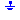 Ground | Ground node |
| Ideal linear electrical resistor | |
| Temperature dependent electrical resistor | |
| Ideal linear electrical conductor | |
| Ideal linear electrical capacitor | |
| Ideal linear electrical inductor | |
| Simple model of an inductor with saturation | |
| Transformer with two ports | |
| Gyrator | Gyrator |
| Electromotoric force (electric/mechanic transformer) | |
| VCV | Linear voltage-controlled voltage source |
| VCC | Linear voltage-controlled current source |
| CCV | Linear current-controlled voltage source |
| Linear current-controlled current source | |
| 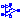 OpAmp | Simple nonideal model of an OpAmp with limitation |
| Ideal linear electrical resistor with variable resistance | |
| Ideal linear electrical conductor with variable conductance | |
| Ideal linear electrical capacitor with variable capacitance | |
| Ideal linear electrical inductor with variable inductance |
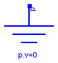
Ground of an electrical circuit. The potential at the ground node is zero. Every electrical circuit has to contain at least one ground object.
| Type | Name | Description |
|---|---|---|
| p |
model Ground "Ground node" Interfaces.Pin p; equation p.v = 0; end Ground;

The linear resistor connects the branch voltage v with the branch current i by i*R = v. The Resistance R is allowed to be positive, zero, or negative.
| Type | Name | Default | Description |
|---|---|---|---|
| R | 1 | Resistance [Ohm] |
| Type | Name | Description |
|---|---|---|
| p | Positive pin (potential p.v > n.v for positive voltage drop v) | |
| n | Negative pin |
model Resistor "Ideal linear electrical resistor" extends Interfaces.OnePort; parameter SI.Resistance R=1 "Resistance"; equation R*i = v; end Resistor;
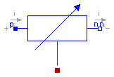
This is a model for an electrical resistor where the generated heat is dissipated to the environment via connector heatPort and where the resistance R is temperature dependent according to the following equation:
R = R_ref*(1 + alpha*(heatPort.T - T_ref))
alpha is the temperature coefficient of resistance, which is often abbreviated as TCR. In resistor catalogues, it is usually defined as X [ppm/K] (parts per million, similarly to per centage) meaning X*1.e-6 [1/K]. Resistors are available for 1 .. 7000 ppm/K, i.e., alpha = 1e-6 .. 7e-3 1/K;
When connector heatPort is not connected, the temperature dependent behaviour is switched off by setting heatPort.T = T_ref. Additionally, the equation heatPort.Q_flow = 0 is implicitly present due to a special rule in Modelica that flow variables of not connected connectors are set to zero.
| Type | Name | Default | Description |
|---|---|---|---|
| R_ref | 1 | Resistance at temperature T_ref [Ohm] | |
| T_ref | 300 | Reference temperature [K] | |
| alpha | 0 | Temperature coefficient of resistance [1/K] |
| Type | Name | Description |
|---|---|---|
| p | Positive pin (potential p.v > n.v for positive voltage drop v) | |
| n | Negative pin | |
| heatPort |
model HeatingResistor "Temperature dependent electrical resistor"
extends Modelica.Electrical.Analog.Interfaces.OnePort;
parameter SI.Resistance R_ref=1 "Resistance at temperature T_ref";
parameter SI.Temperature T_ref=300 "Reference temperature";
parameter Real alpha(unit="1/K") = 0 "Temperature coefficient of resistance";
SI.Resistance R "Resistance = R_ref*(1 + alpha*(heatPort.T - T_ref));";
Modelica.Thermal.HeatTransfer.Interfaces.HeatPort_a heatPort;
equation
v = R*i;
if cardinality(heatPort) > 0 then
R = R_ref*(1 + alpha*(heatPort.T - T_ref));
heatPort.Q_flow = -v*i;
else
/* heatPort is not connected resulting in the
implicit equation 'heatPort.Q_flow = 0'
*/
R = R_ref;
heatPort.T = T_ref;
end if;
end HeatingResistor;
 Modelica.Electrical.Analog.Basic.Conductor
Modelica.Electrical.Analog.Basic.Conductor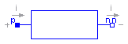
The linear conductor connects the branch voltage v with the branch current i by i = v*G. The Conductance G is allowed to be positive, zero, or negative.
| Type | Name | Default | Description |
|---|---|---|---|
| G | 1 | Conductance [S] |
| Type | Name | Description |
|---|---|---|
| p | Positive pin (potential p.v > n.v for positive voltage drop v) | |
| n | Negative pin |
model Conductor "Ideal linear electrical conductor" extends Interfaces.OnePort; parameter SI.Conductance G=1 "Conductance"; equation i = G*v; end Conductor;
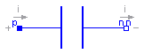
The linear capacitor connects the branch voltage v with the branch current i by i = C * dv/dt. The Capacitance C is allowed to be positive, zero, or negative.
| Type | Name | Default | Description |
|---|---|---|---|
| C | 1 | Capacitance [F] |
| Type | Name | Description |
|---|---|---|
| p | Positive pin (potential p.v > n.v for positive voltage drop v) | |
| n | Negative pin |
model Capacitor "Ideal linear electrical capacitor" extends Interfaces.OnePort; parameter SI.Capacitance C=1 "Capacitance"; equation i = C*der(v); end Capacitor;
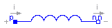
The linear inductor connects the branch voltage v with the branch current i by v = L * di/dt. The Inductance L is allowed to be positive, zero, or negative.
| Type | Name | Default | Description |
|---|---|---|---|
| L | 1 | Inductance [H] |
| Type | Name | Description |
|---|---|---|
| p | Positive pin (potential p.v > n.v for positive voltage drop v) | |
| n | Negative pin |
model Inductor "Ideal linear electrical inductor" extends Interfaces.OnePort; parameter SI.Inductance L=1 "Inductance"; equation L*der(i) = v; end Inductor;
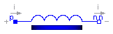
This model approximates the behaviour of an inductor with the influence of saturation,
i.e. the value of the inductance depends on the current flowing through the inductor.
The inductance decreases as current increases.
The parameters are:
| Type | Name | Default | Description |
|---|---|---|---|
| Inom | 1 | Nominal current [A] | |
| Lnom | 1 | Nominal inductance at Nominal current [H] | |
| Lzer | 2*Lnom | Inductance near current=0 [H] | |
| Linf | Lnom/2 | Inductance at large currents [H] |
| Type | Name | Description |
|---|---|---|
| p | Positive pin (potential p.v > n.v for positive voltage drop v) | |
| n | Negative pin |
model SaturatingInductor
"Simple model of an inductor with saturation"
extends Modelica.Electrical.Analog.Interfaces.OnePort;
parameter Modelica.SIunits.Current Inom=1 "Nominal current";
parameter Modelica.SIunits.Inductance Lnom=1
"Nominal inductance at Nominal current";
parameter Modelica.SIunits.Inductance Lzer=2*Lnom "Inductance near current=0";
parameter Modelica.SIunits.Inductance Linf=Lnom/2
"Inductance at large currents";
Modelica.SIunits.Inductance Lact(start=Lzer);
Modelica.SIunits.MagneticFlux Psi;
protected
parameter Modelica.SIunits.Current Ipar(start=Inom/10, fixed=false);
initial equation
(Lnom - Linf) = (Lzer - Linf)*Ipar/Inom*(Modelica.Constants.pi/2-arctan(Ipar/Inom));
equation
assert(Lzer > Lnom+Modelica.Constants.eps,
"Lzer (= " + String(Lzer) + ") has to be > Lnom (= " + String(Lnom) + ")");
assert(Linf < Lnom-Modelica.Constants.eps,
"Linf (= " + String(Linf) + ") has to be < Lnom (= " + String(Lnom) + ")");
(Lact - Linf)*i/Ipar = (Lzer - Linf)*noEvent(arctan(i/Ipar));
Psi = Lact*i;
v = der(Psi);
end SaturatingInductor;

The transformer is a two port. The left port voltage v1, left port current i1, right port voltage v2 and right port current i2 are connected by the following relation:
| v1 | | L1 M | | i1' |
| | = | | | |
| v2 | | M L2 | | i2' |
L1, L2, and M are the primary, secondary, and coupling inductances respectively.
| Type | Name | Default | Description |
|---|---|---|---|
| L1 | 1 | Primary inductance [H] | |
| L2 | 1 | Secondary inductance [H] | |
| M | 1 | Coupling inductance [H] |
| Type | Name | Description |
|---|---|---|
| p1 | Positive pin of the left port (potential p1.v > n1.v for positive voltage drop v1) | |
| n1 | Negative pin of the left port | |
| p2 | Positive pin of the right port (potential p2.v > n2.v for positive voltage drop v2) | |
| n2 | Negative pin of the right port |
model Transformer "Transformer with two ports" extends Interfaces.TwoPort; parameter SI.Inductance L1=1 "Primary inductance"; parameter SI.Inductance L2=1 "Secondary inductance"; parameter SI.Inductance M=1 "Coupling inductance"; equation v1 = L1*der(i1) + M*der(i2); v2 = M*der(i1) + L2*der(i2); end Transformer;
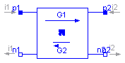
A gyrator is a two-port element defined by the following equations:
i1 = G2 * v2
i2 = -G1 * v1
where the constants G1, G2 are called the gyration conductance.
| Type | Name | Default | Description |
|---|---|---|---|
| G1 | 1 | Gyration conductance [S] | |
| G2 | 1 | Gyration conductance [S] |
| Type | Name | Description |
|---|---|---|
| p1 | Positive pin of the left port (potential p1.v > n1.v for positive voltage drop v1) | |
| n1 | Negative pin of the left port | |
| p2 | Positive pin of the right port (potential p2.v > n2.v for positive voltage drop v2) | |
| n2 | Negative pin of the right port |
model Gyrator "Gyrator" extends Interfaces.TwoPort; parameter SI.Conductance G1=1 "Gyration conductance"; parameter SI.Conductance G2=1 "Gyration conductance"; equation i1 = G2*v2; i2 = -G1*v1; end Gyrator;
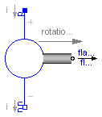
EMF transforms electrical energy into rotational mechanical energy. It is used as basic building block of an electrical motor. The mechanical connector flange_b can be connected to elements of the Modelica.Mechanics.Rotational library. flange_b.tau is the cut-torque, flange_b.phi is the angle at the rotational connection.
| Type | Name | Default | Description |
|---|---|---|---|
| k | 1 | Transformation coefficient [N.m/A] |
| Type | Name | Description |
|---|---|---|
| p | ||
| n | ||
| flange_b |
model EMF "Electromotoric force (electric/mechanic transformer)" parameter Real k(final unit="N.m/A") = 1 "Transformation coefficient"; SI.Voltage v "Voltage drop between the two pins"; SI.Current i "Current flowing from positive to negative pin"; SI.AngularVelocity w "Angular velocity of flange_b"; Interfaces.PositivePin p; Interfaces.NegativePin n; Modelica.Mechanics.Rotational.Interfaces.Flange_b flange_b; equation v = p.v - n.v; 0 = p.i + n.i; i = p.i; w = der(flange_b.phi); k*w = v; flange_b.tau = -k*i; end EMF;
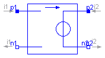
The linear voltage-controlled voltage source is a TwoPort. The right port voltage v2 is controlled by the left port voltage v1 via
v2 = v1 * gain.
The left port current is zero. Any voltage gain can be chosen.
| Type | Name | Default | Description |
|---|---|---|---|
| gain | 1 | Voltage gain |
| Type | Name | Description |
|---|---|---|
| p1 | Positive pin of the left port (potential p1.v > n1.v for positive voltage drop v1) | |
| n1 | Negative pin of the left port | |
| p2 | Positive pin of the right port (potential p2.v > n2.v for positive voltage drop v2) | |
| n2 | Negative pin of the right port |
model VCV "Linear voltage-controlled voltage source" extends Interfaces.TwoPort; parameter Real gain=1 "Voltage gain"; equation v2 = v1*gain; i1 = 0; end VCV;
The linear voltage-controlled current source is a TwoPort. The right port current i2 is controlled by the left port voltage v1 via
i2 = v1 * transConductance.
The left port current is zero. Any transConductance can be chosen.
| Type | Name | Default | Description |
|---|---|---|---|
| transConductance | 1 | Transconductance [S] |
| Type | Name | Description |
|---|---|---|
| p1 | Positive pin of the left port (potential p1.v > n1.v for positive voltage drop v1) | |
| n1 | Negative pin of the left port | |
| p2 | Positive pin of the right port (potential p2.v > n2.v for positive voltage drop v2) | |
| n2 | Negative pin of the right port |
model VCC "Linear voltage-controlled current source" extends Interfaces.TwoPort; parameter SI.Conductance transConductance=1 "Transconductance"; equation i2 = v1*transConductance; i1 = 0; end VCC;
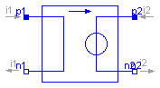
The linear current-controlled voltage source is a TwoPort. The right port voltage v2 is controlled by the left port current i1 via
v2 = i1 * transResistance.
The left port voltage is zero. Any transResistance can be chosen.
| Type | Name | Default | Description |
|---|---|---|---|
| transResistance | 1 | Transresistance [Ohm] |
| Type | Name | Description |
|---|---|---|
| p1 | Positive pin of the left port (potential p1.v > n1.v for positive voltage drop v1) | |
| n1 | Negative pin of the left port | |
| p2 | Positive pin of the right port (potential p2.v > n2.v for positive voltage drop v2) | |
| n2 | Negative pin of the right port |
model CCV "Linear current-controlled voltage source" extends Interfaces.TwoPort; parameter SI.Resistance transResistance=1 "Transresistance"; equation v2 = i1*transResistance; v1 = 0; end CCV;
 Modelica.Electrical.Analog.Basic.CCC
Modelica.Electrical.Analog.Basic.CCC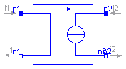
The linear current-controlled current source is a TwoPort. The right port current i2 is controlled by the left port current i1 via
i2 = i1 * gain.
The left port voltage is zero. Any current gain can be chosen.
| Type | Name | Default | Description |
|---|---|---|---|
| gain | 1 | Current gain |
| Type | Name | Description |
|---|---|---|
| p1 | Positive pin of the left port (potential p1.v > n1.v for positive voltage drop v1) | |
| n1 | Negative pin of the left port | |
| p2 | Positive pin of the right port (potential p2.v > n2.v for positive voltage drop v2) | |
| n2 | Negative pin of the right port |
model CCC "Linear current-controlled current source" extends Interfaces.TwoPort; parameter Real gain=1 "Current gain"; equation i2 = i1*gain; v1 = 0; end CCC;
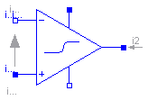
The OpAmp is a simle nonideal model with a smooth out.v = f(vin) characteristic, where "vin = in_p.v - in_n.v". The characteristic is limited by VMax.v and VMin.v. Its slope at vin=0 is the parameter Slope, which must be positive. (Therefore, the absolute value of Slope is taken into calculation.)
| Type | Name | Default | Description |
|---|---|---|---|
| Slope | 1 | Slope of the out.v/vin characteristic at vin=0 |
| Type | Name | Description |
|---|---|---|
| in_p | Positive pin of the input port | |
| in_n | Negative pin of the input port | |
| out | Output pin | |
| VMax | Positive output voltage limitation | |
| VMin | Negative output voltage limitation |
model OpAmp "Simple nonideal model of an OpAmp with limitation"
parameter Real Slope=1 "Slope of the out.v/vin characteristic at vin=0";
Modelica.Electrical.Analog.Interfaces.PositivePin in_p
"Positive pin of the input port";
Modelica.Electrical.Analog.Interfaces.NegativePin in_n
"Negative pin of the input port";
Modelica.Electrical.Analog.Interfaces.PositivePin out "Output pin";
Modelica.Electrical.Analog.Interfaces.PositivePin VMax
"Positive output voltage limitation";
Modelica.Electrical.Analog.Interfaces.NegativePin VMin
"Negative output voltage limitation";
SI.Voltage vin "input voltagae";
protected
Real f "auxiliary variable";
Real absSlope;
equation
in_p.i = 0;
in_n.i = 0;
VMax.i = 0;
VMin.i = 0;
vin = in_p.v - in_n.v;
f = 2/(VMax.v - VMin.v);
absSlope = if (Slope < 0) then -Slope else Slope;
out.v = (VMax.v + VMin.v)/2 + absSlope*vin/(1 + absSlope*noEvent(if (f*vin
< 0) then -f*vin else f*vin));
end OpAmp;
 Modelica.Electrical.Analog.Basic.VariableResistor
Modelica.Electrical.Analog.Basic.VariableResistor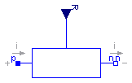
The linear resistor connects the branch voltage v with the
branch current i by
i*R = v
The Resistance R is given as input signal.
Attention!!!
It is recommended that the R signal should not cross the zero value. Otherwise
depending on the surrounding circuit the probability of singularities is high.
| Type | Name | Description |
|---|---|---|
| p | Positive pin (potential p.v > n.v for positive voltage drop v) | |
| n | Negative pin | |
| input | R |
model VariableResistor
"Ideal linear electrical resistor with variable resistance"
extends Modelica.Electrical.Analog.Interfaces.OnePort;
Modelica.Blocks.Interfaces.RealInput R(
redeclare type SignalType = Modelica.SIunits.Resistance);
equation
v = R*i;
end VariableResistor;
Modelica.Electrical.Analog.Basic.VariableConductor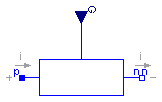
The linear conductor connects the branch voltage v with the
branch current i by
i = G*v
The Conductance G is given as input signal.
Attention!!!
It is recommended that the G signal should not cross the zero value. Otherwise
depending on the surrounding circuit the probability of singularities is high.
| Type | Name | Description |
|---|---|---|
| p | Positive pin (potential p.v > n.v for positive voltage drop v) | |
| n | Negative pin | |
| input | G |
model VariableConductor
"Ideal linear electrical conductor with variable conductance"
extends Modelica.Electrical.Analog.Interfaces.OnePort;
Modelica.Blocks.Interfaces.RealInput G(
redeclare type SignalType = Modelica.SIunits.Conductance);
equation
i = G*v;
end VariableConductor;
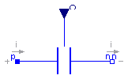
The linear capacitor connects the branch voltage v with the
branch current i by
i = dQ/dt with Q = C * v .
The capacitance C is given as input signal.
It is required that C ≥ 0, otherwise an
assertion is raised. To avoid a variable index system,
C = Cmin, if 0 ≤ C < Cmin, where
Cmin is a parameter with default value Modelica.Constants.eps.
| Type | Name | Default | Description |
|---|---|---|---|
| Cmin | Modelica.Constants.eps | [F] |
| Type | Name | Description |
|---|---|---|
| p | Positive pin (potential p.v > n.v for positive voltage drop v) | |
| n | Negative pin | |
| input | C |
model VariableCapacitor
"Ideal linear electrical capacitor with variable capacitance"
extends Modelica.Electrical.Analog.Interfaces.OnePort;
Modelica.Blocks.Interfaces.RealInput C(
redeclare type SignalType = Modelica.SIunits.Capacitance);
parameter Modelica.SIunits.Capacitance Cmin=Modelica.Constants.eps;
Modelica.SIunits.ElectricCharge Q;
equation
assert(C>=0,"Capacitance C (= " +
String(C) + ") has to be >= 0!");
// protect solver from index change
Q = noEvent(max(C,Cmin))*v;
i = der(Q);
end VariableCapacitor;
 Modelica.Electrical.Analog.Basic.VariableInductor
Modelica.Electrical.Analog.Basic.VariableInductor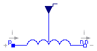
The linear inductor connects the branch voltage v with the
branch current i by
v = d Psi/dt with Psi = L * i .
The inductance L is as input signal.
It is required that L ≥ 0, otherwise an
assertion is raised. To avoid a variable index system,
L = Lmin, if 0 ≤ L < Lmin, where
Lmin is a parameter with default value Modelica.Constants.eps.
| Type | Name | Default | Description |
|---|---|---|---|
| Lmin | Modelica.Constants.eps | [H] |
| Type | Name | Description |
|---|---|---|
| p | Positive pin (potential p.v > n.v for positive voltage drop v) | |
| n | Negative pin | |
| input | L |
model VariableInductor
"Ideal linear electrical inductor with variable inductance"
extends Modelica.Electrical.Analog.Interfaces.OnePort;
Modelica.Blocks.Interfaces.RealInput L(
redeclare type SignalType = Modelica.SIunits.Inductance);
Modelica.SIunits.MagneticFlux Psi;
parameter Modelica.SIunits.Inductance Lmin=Modelica.Constants.eps;
equation
assert(L>=0,"Inductance L_ (= " +
String(L) + ") has to be >= 0!");
// protect solver from index change
Psi = noEvent(max(L,Lmin))*i;
v = der(Psi);
end VariableInductor;